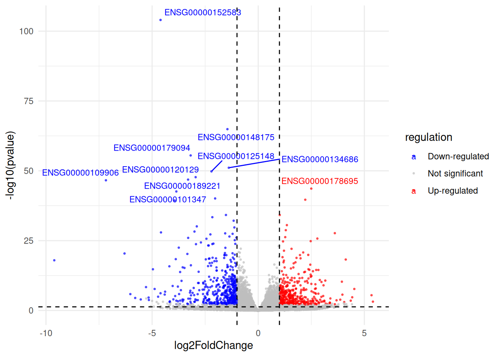

4 Day-4 : Genomic Data Exploration Using R - 1
4.1 Learning Objectives
By the end of this day, students will be able to:
- Understand common genomic data types
- Learn what Bioconductor is and why it is used
- Work with expression data in R
- Use Bioconductor data structures
- Perform basic exploratory analysis on genomic datasets
4.2 What Is Genomic Data?
Genomic data refers to information derived from DNA, RNA, or related molecules.
Common genomic data types include:
- Gene expression data (RNA-seq, microarrays)
- Genomic coordinates (BED, GFF, GRanges)
- Variant data (VCF)
- Annotation data (gene names, pathways)
In this course, we focus on gene expression data.
4.3 What Is Bioconductor?
Bioconductor is a collection of R packages designed for:
- Genomic data analysis
- Biological annotation
- Reproducible research
Key features:
- Standardized data structures
- Well-documented packages
- Strong integration with R statistics
Bioconductor complements CRAN.
4.4 Installing Bioconductor
Install Bioconductor (only once):
# install.packages("BiocManager") [unhash it for first run]
# BiocManager::install() [unhash it for first run]Install required packages:
Loading Required Libraries
## Loading required package: MatrixGenerics## Loading required package: matrixStats##
## Attaching package: 'matrixStats'## The following object is masked from 'package:dplyr':
##
## count##
## Attaching package: 'MatrixGenerics'## The following objects are masked from 'package:matrixStats':
##
## colAlls, colAnyNAs, colAnys, colAvgsPerRowSet, colCollapse,
## colCounts, colCummaxs, colCummins, colCumprods, colCumsums,
## colDiffs, colIQRDiffs, colIQRs, colLogSumExps, colMadDiffs,
## colMads, colMaxs, colMeans2, colMedians, colMins, colOrderStats,
## colProds, colQuantiles, colRanges, colRanks, colSdDiffs, colSds,
## colSums2, colTabulates, colVarDiffs, colVars, colWeightedMads,
## colWeightedMeans, colWeightedMedians, colWeightedSds,
## colWeightedVars, rowAlls, rowAnyNAs, rowAnys, rowAvgsPerColSet,
## rowCollapse, rowCounts, rowCummaxs, rowCummins, rowCumprods,
## rowCumsums, rowDiffs, rowIQRDiffs, rowIQRs, rowLogSumExps,
## rowMadDiffs, rowMads, rowMaxs, rowMeans2, rowMedians, rowMins,
## rowOrderStats, rowProds, rowQuantiles, rowRanges, rowRanks,
## rowSdDiffs, rowSds, rowSums2, rowTabulates, rowVarDiffs, rowVars,
## rowWeightedMads, rowWeightedMeans, rowWeightedMedians,
## rowWeightedSds, rowWeightedVars## Loading required package: GenomicRanges## Loading required package: stats4## Loading required package: BiocGenerics## Loading required package: generics##
## Attaching package: 'generics'## The following object is masked from 'package:caret':
##
## train## The following object is masked from 'package:lubridate':
##
## as.difftime## The following object is masked from 'package:dplyr':
##
## explain## The following objects are masked from 'package:base':
##
## as.difftime, as.factor, as.ordered, intersect, is.element, setdiff,
## setequal, union##
## Attaching package: 'BiocGenerics'## The following object is masked from 'package:dplyr':
##
## combine## The following objects are masked from 'package:stats':
##
## IQR, mad, sd, var, xtabs## The following objects are masked from 'package:base':
##
## anyDuplicated, aperm, append, as.data.frame, basename, cbind,
## colnames, dirname, do.call, duplicated, eval, evalq, Filter, Find,
## get, grep, grepl, is.unsorted, lapply, Map, mapply, match, mget,
## order, paste, pmax, pmax.int, pmin, pmin.int, Position, rank,
## rbind, Reduce, rownames, sapply, saveRDS, table, tapply, unique,
## unsplit, which.max, which.min## Loading required package: S4Vectors##
## Attaching package: 'S4Vectors'## The following objects are masked from 'package:lubridate':
##
## second, second<-## The following objects are masked from 'package:dplyr':
##
## first, rename## The following object is masked from 'package:tidyr':
##
## expand## The following object is masked from 'package:utils':
##
## findMatches## The following objects are masked from 'package:base':
##
## expand.grid, I, unname## Loading required package: IRanges##
## Attaching package: 'IRanges'## The following object is masked from 'package:lubridate':
##
## %within%## The following objects are masked from 'package:dplyr':
##
## collapse, desc, slice## The following object is masked from 'package:purrr':
##
## reduce## Loading required package: Seqinfo## Loading required package: Biobase## Welcome to Bioconductor
##
## Vignettes contain introductory material; view with
## 'browseVignettes()'. To cite Bioconductor, see
## 'citation("Biobase")', and for packages 'citation("pkgname")'.##
## Attaching package: 'Biobase'## The following object is masked from 'package:MatrixGenerics':
##
## rowMedians## The following objects are masked from 'package:matrixStats':
##
## anyMissing, rowMediansExample Dataset: airway
The airway dataset contains RNA-seq gene expression data from an experiment studying the effect of dexamethasone on human airway smooth muscle cells.
What Kind of Data Is This?
The airway dataset contains raw RNA-seq count data.
Each value represents the number of sequencing reads mapped to a gene
Values are integers
Data is not normalized
Data is not log-transformed
Load the dataset:
## class: RangedSummarizedExperiment
## dim: 63677 8
## metadata(1): ''
## assays(1): counts
## rownames(63677): ENSG00000000003 ENSG00000000005 ... ENSG00000273492
## ENSG00000273493
## rowData names(10): gene_id gene_name ... seq_coord_system symbol
## colnames(8): SRR1039508 SRR1039509 ... SRR1039520 SRR1039521
## colData names(9): SampleName cell ... Sample BioSampleUnderstanding SummarizedExperiment
SummarizedExperiment is a core Bioconductor data structure.
It contains:
assay data – expression matrix
rowData – gene-level information
colData – sample-level metadata
Exploring the Expression Data Assay Data (Counts Matrix)
## SRR1039508 SRR1039509 SRR1039512 SRR1039513 SRR1039516
## ENSG00000000003 679 448 873 408 1138
## ENSG00000000005 0 0 0 0 0
## ENSG00000000419 467 515 621 365 587
## ENSG00000000457 260 211 263 164 245
## ENSG00000000460 60 55 40 35 78Dimensions:
## [1] 63677 8Sample Metadata (colData)
## DataFrame with 8 rows and 9 columns
## SampleName cell dex albut Run avgLength
## <factor> <factor> <factor> <factor> <factor> <integer>
## SRR1039508 GSM1275862 N61311 untrt untrt SRR1039508 126
## SRR1039509 GSM1275863 N61311 trt untrt SRR1039509 126
## SRR1039512 GSM1275866 N052611 untrt untrt SRR1039512 126
## SRR1039513 GSM1275867 N052611 trt untrt SRR1039513 87
## SRR1039516 GSM1275870 N080611 untrt untrt SRR1039516 120
## SRR1039517 GSM1275871 N080611 trt untrt SRR1039517 126
## SRR1039520 GSM1275874 N061011 untrt untrt SRR1039520 101
## SRR1039521 GSM1275875 N061011 trt untrt SRR1039521 98
## Experiment Sample BioSample
## <factor> <factor> <factor>
## SRR1039508 SRX384345 SRS508568 SAMN02422669
## SRR1039509 SRX384346 SRS508567 SAMN02422675
## SRR1039512 SRX384349 SRS508571 SAMN02422678
## SRR1039513 SRX384350 SRS508572 SAMN02422670
## SRR1039516 SRX384353 SRS508575 SAMN02422682
## SRR1039517 SRX384354 SRS508576 SAMN02422673
## SRR1039520 SRX384357 SRS508579 SAMN02422683
## SRR1039521 SRX384358 SRS508580 SAMN02422677Convert to data frame:
## SampleName cell dex albut Run avgLength Experiment
## SRR1039508 GSM1275862 N61311 untrt untrt SRR1039508 126 SRX384345
## SRR1039509 GSM1275863 N61311 trt untrt SRR1039509 126 SRX384346
## SRR1039512 GSM1275866 N052611 untrt untrt SRR1039512 126 SRX384349
## SRR1039513 GSM1275867 N052611 trt untrt SRR1039513 87 SRX384350
## SRR1039516 GSM1275870 N080611 untrt untrt SRR1039516 120 SRX384353
## SRR1039517 GSM1275871 N080611 trt untrt SRR1039517 126 SRX384354
## Sample BioSample
## SRR1039508 SRS508568 SAMN02422669
## SRR1039509 SRS508567 SAMN02422675
## SRR1039512 SRS508571 SAMN02422678
## SRR1039513 SRS508572 SAMN02422670
## SRR1039516 SRS508575 SAMN02422682
## SRR1039517 SRS508576 SAMN02422673Gene Metadata (rowData)
## DataFrame with 63677 rows and 10 columns
## gene_id gene_name entrezid gene_biotype
## <character> <character> <integer> <character>
## ENSG00000000003 ENSG00000000003 TSPAN6 NA protein_coding
## ENSG00000000005 ENSG00000000005 TNMD NA protein_coding
## ENSG00000000419 ENSG00000000419 DPM1 NA protein_coding
## ENSG00000000457 ENSG00000000457 SCYL3 NA protein_coding
## ENSG00000000460 ENSG00000000460 C1orf112 NA protein_coding
## ... ... ... ... ...
## ENSG00000273489 ENSG00000273489 RP11-180C16.1 NA antisense
## ENSG00000273490 ENSG00000273490 TSEN34 NA protein_coding
## ENSG00000273491 ENSG00000273491 RP11-138A9.2 NA lincRNA
## ENSG00000273492 ENSG00000273492 AP000230.1 NA lincRNA
## ENSG00000273493 ENSG00000273493 RP11-80H18.4 NA lincRNA
## gene_seq_start gene_seq_end seq_name seq_strand
## <integer> <integer> <character> <integer>
## ENSG00000000003 99883667 99894988 X -1
## ENSG00000000005 99839799 99854882 X 1
## ENSG00000000419 49551404 49575092 20 -1
## ENSG00000000457 169818772 169863408 1 -1
## ENSG00000000460 169631245 169823221 1 1
## ... ... ... ... ...
## ENSG00000273489 131178723 131182453 7 -1
## ENSG00000273490 54693789 54697585 HSCHR19LRC_LRC_J_CTG1 1
## ENSG00000273491 130600118 130603315 HG1308_PATCH 1
## ENSG00000273492 27543189 27589700 21 1
## ENSG00000273493 58315692 58315845 3 1
## seq_coord_system symbol
## <integer> <character>
## ENSG00000000003 NA TSPAN6
## ENSG00000000005 NA TNMD
## ENSG00000000419 NA DPM1
## ENSG00000000457 NA SCYL3
## ENSG00000000460 NA C1orf112
## ... ... ...
## ENSG00000273489 NA RP11-180C16.1
## ENSG00000273490 NA TSEN34
## ENSG00000273491 NA RP11-138A9.2
## ENSG00000273492 NA AP000230.1
## ENSG00000273493 NA RP11-80H18.4Basic Quality Checks Library Sizes
## SRR1039508 SRR1039509 SRR1039512 SRR1039513 SRR1039516 SRR1039517 SRR1039520
## 20637971 18809481 25348649 15163415 24448408 30818215 19126151
## SRR1039521
## 21164133Visualize library sizes:
ggplot(data.frame(library_sizes), aes(x = library_sizes)) +
geom_histogram(bins = 10, fill = "steelblue") +
labs(
title = "Library Size Distribution",
x = "Total Read Counts",
y = "Number of Samples"
)
counts <- assay(airway)
hist(counts[, 1],
breaks = 50,
main = "Distribution of Raw Counts (Sample 1)",
xlab = "Read Counts")
4.4.1 Log Transformation for Exploration
- Raw counts are highly skewed.
- For visualization only, we use a log transformation:
log_counts <- log2(counts + 1)
hist(log_counts[, 1],
breaks = 50,
main = "Log-transformed Counts (Sample 1)",
xlab = "log2(count + 1)")
## [1] untrt trt untrt trt untrt trt untrt trt
## Levels: trt untrtboxplot(
log_counts,
col = ifelse(group == "trt", "tomato", "lightblue"),
las = 2,
main = "Log-transformed Expression Values"
)
4.4.2 Differential Expression Analysis (Conceptual)
- We now demonstrate how genomic analyses are typically performed using a specialized package.
## estimating size factors## estimating dispersions## gene-wise dispersion estimates## mean-dispersion relationship## final dispersion estimates## fitting model and testing## log2 fold change (MLE): dex untrt vs trt
## Wald test p-value: dex untrt vs trt
## DataFrame with 6 rows and 6 columns
## baseMean log2FoldChange lfcSE stat pvalue
## <numeric> <numeric> <numeric> <numeric> <numeric>
## ENSG00000000003 708.602170 0.3788470 0.173141 2.188082 0.0286636
## ENSG00000000005 0.000000 NA NA NA NA
## ENSG00000000419 520.297901 -0.2037604 0.100599 -2.025478 0.0428183
## ENSG00000000457 237.163037 -0.0340428 0.126279 -0.269584 0.7874802
## ENSG00000000460 57.932633 0.1171786 0.301237 0.388992 0.6972820
## ENSG00000000938 0.318098 1.7245505 3.493633 0.493627 0.6215698
## padj
## <numeric>
## ENSG00000000003 0.139308
## ENSG00000000005 NA
## ENSG00000000419 0.183359
## ENSG00000000457 0.930572
## ENSG00000000460 0.895441
## ENSG00000000938 NAres_df <- as.data.frame(res)
res_df$gene <- rownames(res_df)
sig_genes <- res_df %>%
filter(padj < 0.05, abs(log2FoldChange) > 1)
nrow(sig_genes)## [1] 877## baseMean log2FoldChange lfcSE stat pvalue
## ENSG00000003402 2546.61420 -1.183425 0.1635592 -7.235455 4.639712e-13
## ENSG00000004799 914.37901 -2.544032 0.9011874 -2.822977 4.757993e-03
## ENSG00000004846 17.99917 1.881406 0.6992853 2.690470 7.135153e-03
## ENSG00000005471 33.66399 1.218750 0.4343571 2.805871 5.018075e-03
## ENSG00000006788 10.25338 -3.169070 1.0663557 -2.971869 2.959927e-03
## ENSG00000008256 3716.57738 -1.204606 0.2043656 -5.894367 3.761198e-09
## padj gene
## ENSG00000003402 5.563164e-11 ENSG00000003402
## ENSG00000004799 3.621101e-02 ENSG00000004799
## ENSG00000004846 4.938802e-02 ENSG00000004846
## ENSG00000005471 3.772691e-02 ENSG00000005471
## ENSG00000006788 2.511883e-02 ENSG00000006788
## ENSG00000008256 1.925671e-07 ENSG000000082564.4.3 Volcano Plot
- A volcano plot shows both effect size and significance.
ggplot(res_df, aes(x = log2FoldChange, y = -log10(pvalue))) +
geom_point(alpha = 0.4) +
geom_vline(xintercept = c(-1, 1), linetype = "dashed") +
geom_hline(yintercept = -log10(0.05), linetype = "dashed") +
labs(
title = "Volcano Plot",
x = "Log2 Fold Change",
y = "-log10(p-value)"
)## Warning: Removed 30259 rows containing missing values or values outside
## the scale range (`geom_point()`).
- we can add colors based on up-regulation and down-regulation.
res_df <- res_df %>%
mutate(
regulation = case_when(
padj < 0.05 & log2FoldChange > 1 ~ "Up-regulated",
padj < 0.05 & log2FoldChange < -1 ~ "Down-regulated",
TRUE ~ "Not significant"
)
)
ggplot(res_df, aes(x = log2FoldChange, y = -log10(pvalue), color = regulation)) +
geom_point(alpha = 0.6, size = 0.25) +
geom_vline(xintercept = c(-1, 1), linetype = "dashed") +
geom_hline(yintercept = -log10(0.05), linetype = "dashed") +
scale_color_manual(
values = c(
"Up-regulated" = "red",
"Down-regulated" = "blue",
"Not significant" = "grey"
)
) +
labs(
title = "Volcano Plot of Differential Gene Expression",
x = "Log2 Fold Change",
y = "-log10(p-value)",
color = "Gene Regulation"
) +
theme_minimal()## Warning: Removed 30259 rows containing missing values or values outside
## the scale range (`geom_point()`).
- adding the labels for top most significant genes.
library(ggrepel)
top_genes <- res_df %>%
filter(regulation != "Not significant") %>%
arrange(padj) %>%
head(10)
ggplot(res_df, aes(log2FoldChange, -log10(pvalue), color = regulation)) +
geom_point(alpha = 0.6, size = 0.5) +
geom_text_repel(
data = top_genes,
aes(label = gene),
size = 3
) +
geom_vline(xintercept = c(-1, 1), linetype = "dashed") +
geom_hline(yintercept = -log10(0.05), linetype = "dashed") +
scale_color_manual(
values = c("Up-regulated" = "red",
"Down-regulated" = "blue",
"Not significant" = "grey")
) +
theme_minimal()## Warning: Removed 30259 rows containing missing values or values outside
## the scale range (`geom_point()`).